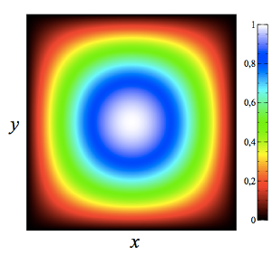
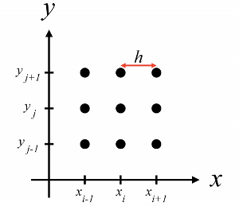
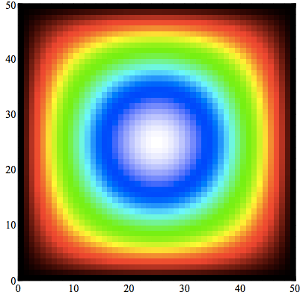

WebRTC Parallel Processing (part-1)
I did a little experiment with WebRTC and a CFD (Computational Fluid Dynamics) solver I wrote. I wanted to see what could be done with webRTC and browser parallel computing. First, I needed a problem that was computationally intense and suitable to parallelization. CFD suited that class of problems and plus, coming from mechanical engineering, it was a type of problems I was decently familiar with.
CFD is a class of numerical methods to solve differential equations from fluid flow problems. We want to solve a given set of equation to compute several fields like flow velocity, temperature and other physical properties.
The methods used in this type of numerical analysis are iterative, meaning that you'll have to compute several solutions, each one function of and closer to the final solution than the previous. When you use parallel computing techniques, you end up with a lot of communication between nodes at each iteration. This way, the communication speed quickly becomes the bottleneck in the process.
In this first post, I'll write about the solver itself. In a second posts, I'll write about how I used WebRtC to distribute the computation across several browsers. In a third post, I'll write about performance considerations.
The Poisson Equation!
The equation I'm solving is in the form of
this equation describes aspects of physical behaviour in, for instance, heat transfer and fluid flow. Fluid flow problems are based in the Navier Stokes equation. Solving the poisson term is an important step of a Navier Stokes solver as it makes up a large amount of the computing time.
In the equation above, the term U(x,y) represents the field we are interested in computing. Usually there's no analytical solution to get U, hence the need to use numerical methods. However if we want to test the solver, we can go the other way around. We Start with a given U function, and replace it in the equation above.
Considering a rectangular domain of width w and height h, we have for instance:
The field U plotted in x, y looks something like this:

Replacing the first equation with this U function we get:
It's important to notice that our U function doesn't have any practical physical meaning. It's just a way to test a solver of a differential equation, of which we have an analytical solution.
Numerical Model
The next step is to discretize the equation and obtain an algebraic formula for U that we can code. I won't go into details about the deduction because this is an extensive topic but you can find many references all over the internet,like this one.
Basically, the idea is to approximate the derivative in an array of points in the domain of the solution. The points are equally spread in x and y like in the image bellow

In the image, h is the distance between two points. In the x and y direction, this distance will be called Δx and Δy, respectively. Here's the numerical formula for our equation:
To compute the field u we follow this procedure: we start with all points set to u = 0 and compute u' for every point. We then repeat the process, computing the new values of u', but now using the old values we computed earlier. The process is repeated until there is no significant difference between the new values and the old ones.
Javascript Implementation
I implemented the solver in node first so that I could have a version to test in my local machine. In CFD testing is an important step and there's two steps to accept a numerical solution as valid. First you have to check if the numerical method is being solved correctly. This step is known as verification. Secondly, you have to check if the solution compares well with the equations. This is known as validation. This two steps are implemented in a small test suit. You can find the solver on agithub repository.
Here's a walkthrough of the solver:
To install it just run
npm install fjsousa/poisson-solver
Then, require and instantiate the solver:
var Poisson = require('poisson-solver');
//Set conditions
var conditions = {
w: 1,
h: 1,
n: 50,
m: 50
};
//Initialize solver
var poisson = new Poisson(conditions);
Here, w and h are the width and height of the domain. In this case, we are choosing an unitary value for both. n and m are the number of cells in the dimensions x and y.
Now we need to set the boundary conditions. According to our analytical solution, the value of the edges of the domain are zero, so we'll create 4 arrays with zero elements, for the north, south, east and west boundaries:
var N = [];
var S = [];
var E = [];
var W = [];
for (var i = 0; i < conditions.n; i++) {
N[i] = S[i] = E[i] = W[i] = 0;
}
//Set Dirichlet boundary conditions to zero
poisson.setBoundaryConditions(N, S, E, W);
Now we are ready to start the solver. We call the method poisson.solver and just have to define the maximum number of iterations and the final residue. The residue is a measurement of the difference between two consecutive u fields. The smaller the residue, the closer the solution is to a final solution.
var maxItterations = 100000000;
var maxResidue = 1E-9 ;
var output = poisson.solver( maxItterations, maxResidue);
console.log('Solver converged with', output.iterations, 'iterations and', output.residue, 'residue.');
Visualization
The solver converges with 6100 iterations a residue of 9.988143389726145e-10.
Solver: iteration # 6200 with residue of 2.321164929065117e-9
Solver: iteration # 6300 with residue of 1.8896603438688794e-9
Solver: iteration # 6400 with residue of 1.5383724641902796e-9
Solver: iteration # 6500 with residue of 1.252389003936899e-9
Solver: iteration # 6600 with residue of 1.0195698719555473e-9
Solver converged with 6610 iterations and 9.988143389726145e-10 residue.
We can visualize the solution using the print method. This writes a n x m table wich you can load in a plotting software. I would recommendveusz.
//Print solution
poisson.print('./field.txt', poisson.u.old);

And that's it. In the next post, I'll show you how I developed from this single program poisson solver and distributed it among several browser tabs.